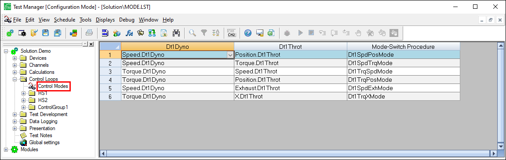

iTest User's Guide
Control loops are Proportional Integral Derivative (PID) controls for high-speed dynamometer, throttle control, and other test system control processes. PID controls stabilize a process or device at a commanded setpoint. These controls are also used to track a setpoint. PID coefficients are set according to the response characteristics of a control system.
To configure PIDs using Test Manager, do the following:
PID Configuration Descriptions
| Option | Description |
| PID Name | (Read-only) Indicates the control group name of the control loop. This name can only be changed by renaming the control group name via the Rename right-click option. |
| Mode Name | (Read-only) Indicates the name assigned to the new control loop. This name can only be changed by renaming the control loop name via the Rename right-click option. |
| PID Type | Type of control: Closed Loop is for closed loop controls. iTest modulates the control channel, attempting to make feedback match setpoint. Open Loop ( % ) is for open loop controls. iTest sets the control output according to a setpoint value expressed as a percentage from 0 to 100. A setpoint of 0 sets the control output to the low rail value assigned to the database channel. A setpoint of 100 sets the control output to the high rail value assigned to the database channel. Open Loop (EU) is for open loop controls. iTest sets the control output according to a setpoint value expressed in engineering units (EU). The allowable range of setpoint values is limited by the low and high EU values assigned to the database channel. In general, the output EU equals the input EU. However, there is a scaling conversion for output channels from High/Low EU to High/Low Rail which are settings defined for the channel. For example, an input EU value of 25 will scale the output EU value to 2.5 if the output channel has High EU = 100, Low EU = 0, High Rail = 10, and Low Rail = 0. ADAPT PID involves a closed loop control and has an output range of 0 to +100%. ADAPT Motoring is a closed loop typically used to control AC or DC dynamometers, and it has an output of -100% to +100%. Since some dynos can both absorb and motor, the control output needs to be able to range both positively (typically absorbing) and negatively (typically motoring). Note that it is strongly recommended that the Motoring control be used only where the negative range is needed. Windup Clamping is a type of closed loop used to troubleshoot excess overshooting caused by a large setpoint change. |
| Frequency | Specify the loop frequency starting from 1 to the system scan rate. |
| Reverse Acting | Select this option to ensure that the control output is adjusted in the correct direction when an increase in the control output causes a decrease in the feedback value.For example, opening a chiller flow control valve decreases the temperature of the chilled fluid. This setting is not available when using the Windup Clamping PID type. |
| Setpoint | Indicates the default setpoint database channel for the control loop. |
| Min | Specify the control loop’s minimum setpoint. |
| Max | Specify the control loop’s maximum setpoint. |
| Feedback | Select the feedback channel associated with the control loop. The fields to the right of this option reflect the Low and High EU values for the selected database channel. |
| Output | Select the output channel associated with the control loop. The fields to the right of this option reflect the Low and High EU values for the selected database channel. |
| Feedforward | Select the database channel whose value is added algebraically to the control output calculated by iTest before the final output value is sent to the hardware. The value is expressed as a percentage (-100 to 100); this value is an offset value (in percentage) that gets added to the final PID calculation. At that point, the output of the PID algorithm is also expressed as a percentage (0 to 100 percent of the difference between the Low and High Rail values assigned to the control channel). This modifies the behavior of the control loop when external disturbances to the process are detectable and their effect predictable. |
| Tuning Parameters | When the PID Type is set to Auto, enter the proportional band for the PID in the P field, the integral gain for the PID in the I field, and the derivative time for the PID in the D field. Your loop can also now use a channel to store the coefficient values. To take advantage of this feature, select the channel that will be used to store the value of the coefficient by clicking on the drop-down next to the corresponding tuning value. You will then be able to programmatically restore or control this value outside of the iTest PID algorithm or tuning screen. When using PID tune, these values will be persisted in Master.ini so that they will always load up with their last value when iTest reinitializes. |
| Enable PID * | Specify a channel to be used. When the channel's value is 1, then the PID action is enabled. When the channel's value is 0, then the PID output will be the Follow Signal. |
| Follow * | Specify a channel to be used as the Follow Signal. This is the value of the PID output when in follow mode. |
| Foldback * | Specify a channel to be used. This is the value representing a percentage reduction for the Kp, Kd, and Ki constant values when foldback is active. For example, if the Foldback % = 25 and Ki = 50, then Ki will be 37.5 when foldback is active. This value is always positive. |
| Foldback Thres * | Specify a channel to be used as the Foldback Threshold. This is the +/- percent of the setpoint range where the Kp, Kd, and Ki constants are reduced by the Foldback percentage. For example, if the Foldback Threshold = 3, Setpoint Maximum = 120, Setpoint =80, and SP = 100, then the foldback action will occur if the PV is between 98.8 and 101.2. SP is the desired real value that the process is being controlled to. PV is the real value of the process variable that is being controlled. |
| Foldback Status * | Specify a channel to be used. This is the value of the foldback status. If active, this status is set to 1; otherwise, this status is set to 0. |
| PID Error * | Specify a channel to be used. This value is the error value used by the PID to determine how to manipulate the output to bring the process value to the setpoint. |
| Kp Total * | Specify a channel to be used. This is the proportional term contribution to the PID output. |
| Ki Total * | Specify a channel to be used. This is the integral term contribution to the PID output. |
| Kd Total * | Specify a channel to be used. This is the derivative term contribution to the PID output. |
| Kpid Total * | Specify a channel to be used. This is the total error. |
| Min Output % * | Specify a channel to be used. This is the minimum value of the output as a percentage. This is a read parameter which is used to clamp the output. For example, you may want 20-80% instead of 0-100%. |
| Max Output % * | Specify a channel to be used. This is the maximum value of the output as a percentage. This is a read parameter which is used to clamp the output. For example, you may want 20-80% instead of 0-100% |
The following right-click options are available to configure control loops:
Right-Click Options
| Option | Description |
| New ControlGroup | Adds a new control group folder. |
| Properties | Opens the PID Settings dialog. Refer to the PID Settings section below for more information. |
| New ControlGroup# | Opens the PID editor for the new control loop. |
| Rename... | Rename the control group name/control loop. Refer to the Control Groups section below for more information. |
| Delete | Deletes the selected control group folder/control loop. |
| Show in State Editor | Enables/disables the ability to display in the State Editor. |
| Save | Saves the control loop. |
| Duplicate... | Duplicates the selected control loop. |
| Print... | Prints the control loop. |
| Startup Mode | Enables/disables startup mode. |
The PID Settings dialog is used to configure the following settings:
PID Settings
| Setting | Description |
| Show PID Control | Enable/disable PID control. |
| Disable PID Control Sliders | Enable/disable the ability to disable PID control sliders. |
| Use Internal PIDs | Enable/disable the use of internal PIDs. |
| HS1 Label | Label for the left PID mode control in the Mode Control and PID Control dialogs. |
| HS2 Label | Label for the right PID mode control in the Mode Control and PID Control dialogs. |
Originally, iTest had hardcoded group names. These group names were HS1, HS2, LS1, LS2, ... LS20 (where, HS=High Speed, LS=Low Speed). You could have as many loops as you wanted defined under each group, but only one could run at a time. That same rule is still in effect, but the group names are user-configurable. iTest still starts with 2 pre-defined group names - HS1 and HS2, but these do not have to be used. Instead, you can add new groups to the tree which have a name that is meaningful such as Dyno and Throttle. The relationship between the individual PIDs in a PID group is that only one loop in each group can be run at a time.
Control modes are logically combined pairs of PID control loops used to effectively control a test system such as an engine dynamometer system. Example control pairs include: Speed/Position, Speed/Torque, Torque/Position, etc. In the engine dynamometer example, the first loop typically represents the dynamometer control loop and the second represents the engine throttle control loop. Expand the Control Loops folder in the Test Manager tree bar and use the Control Modes item to configure new control mode pairs based on the loops you have defined.
Control Modes

Select a valid option for Dyno and Throttle loops and provide an optional procedure that can be used to perform the mode switch when the operator selects this mode combination at runtime.
These mode pairs are used in two places in iTest:
There is a standalone utility which is designed to facilitate the tuning process for a PID. For more information regarding this utility, see the PIDTune document.